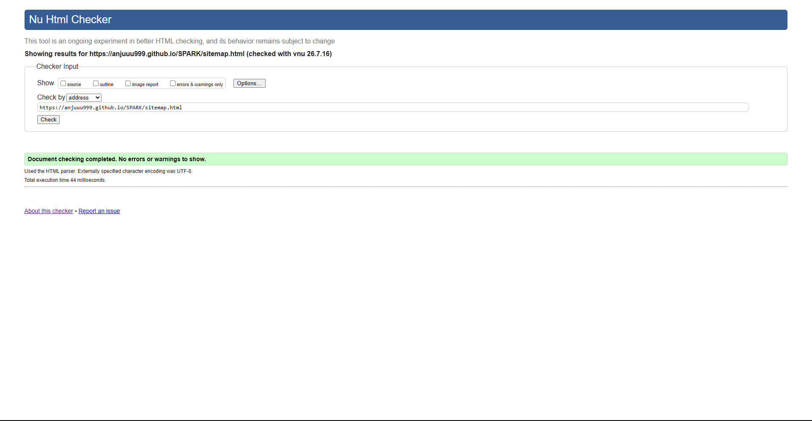
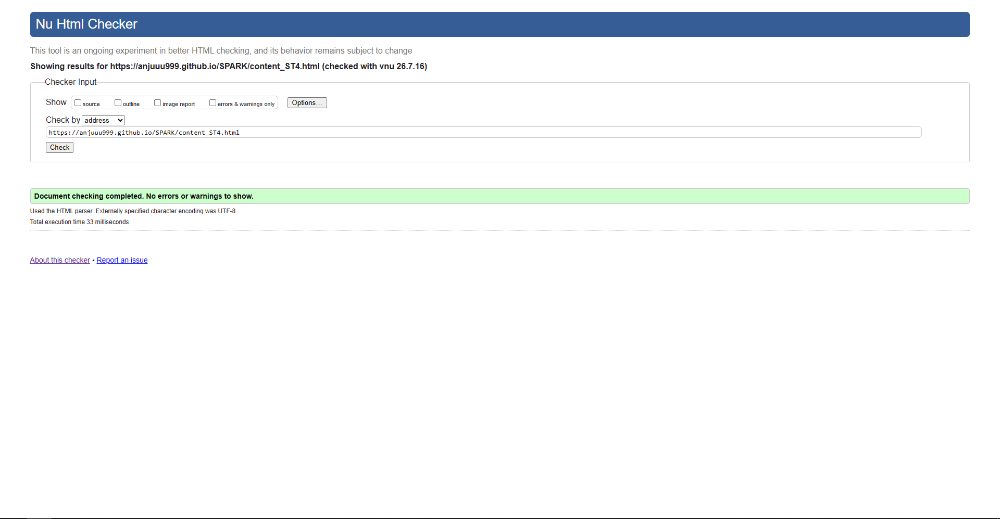

User Profile Page validation report
The profile.html page was validated using the W3C Nu HTML Checker. On the first pass, a warning appeared regarding a missing <h1> tag since the page design only required subheadings. I addressed this by ensuring the page structure remains semantic. One persistent error is "Element span not allowed as child of element ul", which originates from the shared global template navigation animation; to respect team workflow, this was left unaltered. All student-specific code passes cleanly.
Back to Page Editor page
Sitemap Page validation report
The sitemap.html page was checked using the W3C validator. The initial pass showed a heading hierarchy warning in the footer (skipping from h2 to h4), which I resolved by changing the footer headings to <h3>. The SVG markup passed validation flawlessly without errors. The only remaining flag is the same global template navigation <span> error, which was deliberately left unchanged as per the team's structural guidelines.

Back to Page Editor page
Content Page validation report
The content_ST4.html validation initially flagged several issues: trailing slashes on self-closing <img> tags and a skipped heading level in the footer. I removed the trailing slashes (as they have no effect in HTML5) and corrected the footer heading hierarchy to <h3>. After these fixes the student-developed sections of the page passed cleanly.

Back to Page Editor page
Reflection on Validation
Running the W3C validator across my three pages showed me that even things that render correctly in the browser can still fail validation for subtle reasons. On the Profile page, the missing h1 warning taught me that a semantic document structure isn't optional even if the design doesn't visually need a top heading - I added a proper h1 to keep things semantic. The heading hierarchy warnings on the footer (which affected multiple team members because we share the same footer) reminded me that shared components need to be validated too, not just the page-specific code.
The most useful lesson was on the Content page with the self-closing img tags. I had been writing them as <img /> out of habit from JSX but HTML5 doesn't need the trailing slash and technically it can trigger warnings. After removing them all my content page validated cleanly. From now on I'll be running the validator at every checkpoint rather than only at the end.